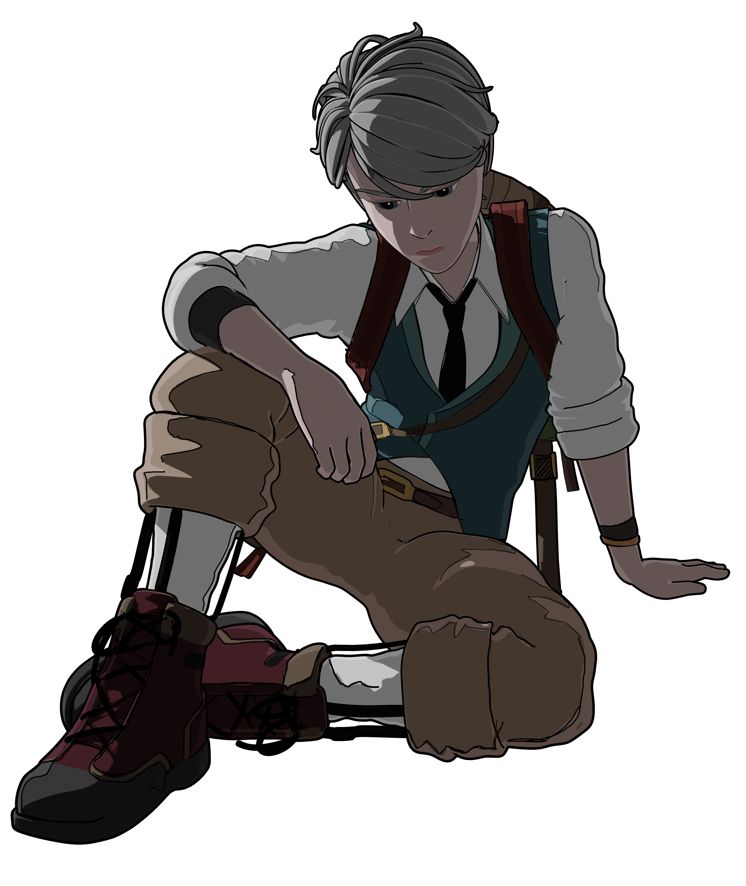
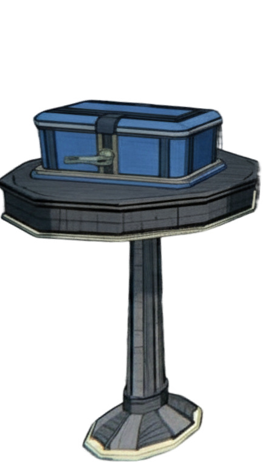
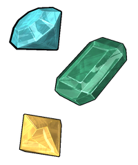
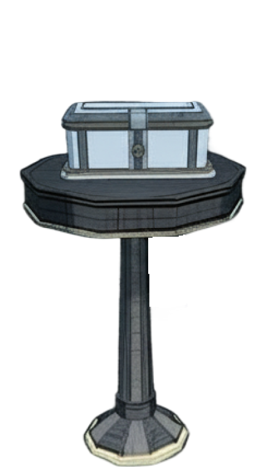
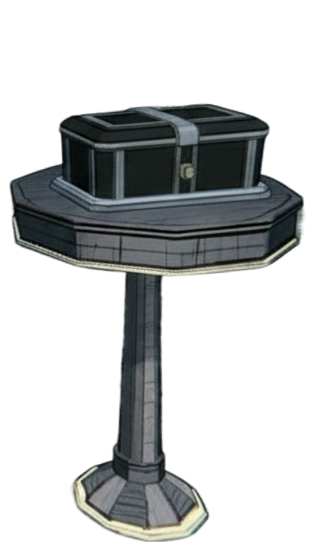

Sobre o jogo
Imagine herdar uma mansão de 45 quartos com uma condição impossível: encontrar o Quarto 46. Em Blue Prince, você é Simon explorando Mt. Holly, uma mansão que muda de forma e reseta seus segredos a cada amanhecer.
Mais do que explorar um mapa, você o constrói decidindo quais salas conectar sob um limite de passos. É um roguelite arquitetônico sobre a obsessão humana pela ordem e pelo controle.

GALERIA
Meu take:
Bizarro que tenha sido desenvolvido por uma pessoa só e tenha demorado 8 anos pra ficar pronto. O jogo só começa de verdade quando você chega no quarto 46. O único upgrade do jogo é o conhecimento que você adquire enquanto joga e o progresso acontece mais no seu cérebro do que na tela. Além disso, o jogo te força a seguir uma trajetória não linear por conta do RNG e isso flexibilizou muito a minha mente para abandonar caminhos rígidos. Quando você finalmente consegue encaixar as peças da história, a sensação de dever cumprido e a satisfação são indescritíveis.
Visual e sonoramente, o jogo é uma experiência à parte. As cenas de animação constroem perfeitamente uma atmosfera de mistério e a trilha sonora é de arrepiar. A música é tão boa e imersiva que, em vários momentos, me peguei parando o personagem no meio de uma sala apenas pra escutar o loop até o final.
Apesar de ser incrível, o jogo peca no quesito acessibilidade: o idioma. O jogo possui uma quantidade massiva de texto e é totalmente dependente da língua inglesa. O próprio título é um jogo de palavras (Blueprint). Por conta dos trocadilhos, enigmas fonéticos e duplos sentidos, levariam uns oito anos para traduzir esse jogo corretamente sem destruir os puzzles. Por isso, infelizmente é impossível recomendá-lo para todos. Ele exige um nível avançado de inglês para ser verdadeiramente aproveitado.
Mas onde Blue Prince realmente brilha é na forma como ele brinca com a sua compreensão da verdade. A narrativa é um quebra-cabeça colossal. Em vários momentos, uma "verdade" absoluta que você tinha como certa se revela falsa, e tudo o que você passou repentinamente se torna o "caminho errado". O jogo te ilude com a chegada ao final. O próprio desenvolvedor afirma que o jogador tem o direito de se dar por satisfeito com esse final e parar por aí. Mas parar nesse ponto significa ter jogado apenas uma fração microscópica da experiência.
O verdadeiro conteúdo está nos enigmas, nas cartas vermelhas escondidas, nos códigos de cofres e nos reinos escondidos debaixo da mansão. A história não é simplesmente "contada" a você em uma cutscene, ela deve ser conquistada com muito suor mental. E aqui mora a grande ironia e genialidade: esse jogo nunca acaba.
Veredito final: Blue Prince é uma obra-prima narrativa. É um jogo voltado estritamente pra pessoas de mente curiosa, que gostam de cavar fundo em mecânicas misteriosas, mas que acima de tudo, possuam a maturidade pra apreciar a jornada em si em vez de exigir que todas as perguntas da vida (e do jogo) tenham respostas óbvias e mastigadas.
Parlor Boxes




INSTRUÇÕES
Você tem somente 1 chance de encontrar a caixa com o prêmio.
Terá ao menos 1 caixa que diz a verdade e pelo menos 1 caixa que mente.
Só uma caixa tem o prêmio, as outras duas estão vazias.
Atenção: Nem sempre a caixa verdadeira tem o prêmio!